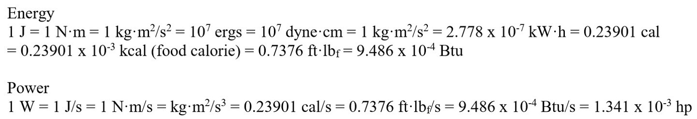

5.3 – Open Systems and Enthalpy¶
5.3.0 – Learning Objectives¶
By the end of this section you should be able to:
- Understand the definition of enthalpy.
- Explain how enthalpy differs from internal energy
- Look at the steps to solving an enthalpy problem.
5.3.1 – Introduction¶
To account for open systems. Enthalpy is used as a measurement of Energy in a system. This This notebook will go over a short explanation of enthalpy and go over problem 7.4-2 of the textbook.
Recall that the energy equation in a closed system is \(E_{tot} = Q - W\) and after negating potential and kinetic energy becomes: \(U = Q-W\).
In an open system, there is a transfer of material. This means that there needs to be a correction for internal energy \(U\) to account for the particles leaving the system. Enthalpy \(H\) is a measure of energy accounts for open systems and the energy balance becomes:
and
Enthalpy is extremely useful because many processes in chemical engineering are open systems and as a result, there are extensive databases that contain enthalpy values of various chemicals.
5.3.2 – Definition of Enthalpy¶
Enthalpy is defined as \(H= U+PV\) and a change of enthalpy is defined as \(\Delta H = \Delta U + \Delta PV\). This accounts for the open system by noticing that the pressure of the system remains constant with the pressure of the surroundings.
5.3.3 – Problem Statement¶
Steam powers a turbine with a flowrate of 500 kg/h at 44 atm and \(450^{\circ} \space C\). The Steam enters the turbine at an average linear velocity of 60 m/s and exits 5 m below the turbine inlet at 360 m/s. The turbine produces 70 kW of shaft work and has a heat loss of \(10^4\) kcal/h. Calculate the specific enthalpy change based on this process.
Useful conversions: 
1. List the assumptions and definitions¶
Our major assumption is that there is no extra work done except for the 70W of electrical energy and no other forms of heat transfer. Essentially, the only data that is relevant is given to us explicitly.
For simplicity, we will say that 4.4 MPa is close enough to 4.5MPa on the steam table. (all teachers are different; check with yours first!)
Let any inlet flow take the subscript \(i\) and outlet flow take the subscript \(o\).
2. Draw a flowchart and write the full equation to solve¶
Expanded this becomes
3. Identify the known and unknown variables¶
be careful with units; we want everything in terms of \(\frac{Kj}{hr}\)
\(\dot{H}_i\) for 500kg of steam at 44 atm and 450° = \(3324.2 \space \frac{kJ}{kg \cdot hr} \cdot 500 \space kg\) = \(1,662,100 \space \frac{kJ}{hr}\)
from the nist steam table
\(H_o\) is unknown because we do not know the temperature of steam leaving the turbine.
\(\dot{E}_{ki}= \frac{1}{2} \cdot \dot{m} \cdot v^2 = 500 \space \frac{kg}{hr} \cdot \frac{1}{2} \cdot (60 \space \frac{m}{s})^2 \cdot \frac{1 \space kJ}{1000 \space J} = 900 \space \frac{kJ}{hr}\)
\(\dot{E}_{ko} = \frac{1}{2} \cdot \dot{m} \cdot v^2 = 500 \space \frac{kg}{hr} \cdot \frac{1}{2} \cdot (360 \space \frac{m}{s})^2 \cdot \frac{1k \space J}{1000 \space J} = 32,400 \space \frac{kJ}{hr}\)
\(\dot{E}_{pi}= \dot{m} \cdot g \cdot h = 500 \space \frac{kg}{hr} \cdot 9.81 \space \frac{m}{s}^2 \cdot \frac{1 \space kJ}{1000 \space J} \cdot 5 \space m = 24.525 \space \frac{kJ}{hr}\)
\(\dot{E}_{po}= \dot{m} \cdot g \cdot h = 500 \space \frac{kg}{hr} \cdot 9.81\frac{m}{s}^2 \cdot \frac{1 \space kJ}{1000 \space J} \cdot 0m = 0 \space \frac{kJ}{hr}\)
\(\dot{Q} = lost = -10^4 \space kcal \times 4184 \frac{J}{kcal} \times \frac{1 \space kJ}{1000 \space J} = -41,840 \space \frac{kJ}{hr}\)
\(\dot{W}_{net} = +W_e = 70 \space kW \cdot \frac{3600 \space s}{1 \space hr} = 252,000 \space \frac{kJ}{hr}\)
4. Solving the system¶
Note: This is a relatively easy question with the challenge in the details. A DOF analysis will not be performed as a result
Becomes (units are omitted for clarity):
Returning the enthalpy to specific property
In [ ]: